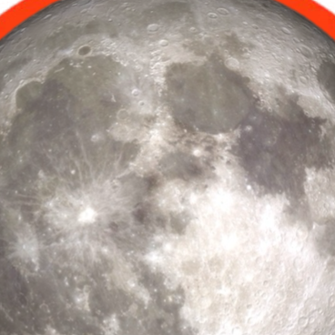
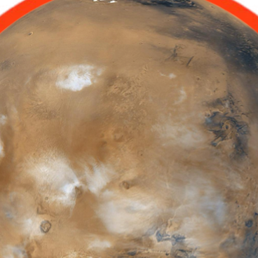
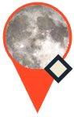

Earth analog explorer
Alians.
Find the Moon and
Mars on Earth.
Explore ten places on our planet that share features with the Moon or Mars, from volcanic fields to salt flats. See what they can teach us before we go.
Start exploring

Moon
MarsExplore the map
Select a pin to compare an Earth site with the Moon or Mars.

10 sites shown
 Team candidate
Team candidate
NASA referenceDrag to pan. Use + and − to zoom. With the map focused, use the arrow keys to pan.
Why Earth analogs?
A lava field can help a crew practice navigating rough lunar terrain. A dry salt flat can help scientists work out how to recognize traces of ancient water on Mars. Each site is useful for a different kind of fieldwork.
Alians compares six team candidates and four NASA reference sites. The pins use representative coordinates for large regions. Each card links to its evidence and reports whether an overall similarity percentage was published.
NASA Planetary Analog Explorer ↗